5．阿拉伯的算术和代数
当阿拉伯人还是游牧民族时，他们有称呼数的文字但无记号。他们采用并改进了印度的数字记号和进位记法。他们把这些数字记号表示整数和普通分数（在印度方案上加一横线），用于数学课本上，把按照希腊格式的阿拉伯字母数字用于天文书上。在天文上他们仍仿效托勒玫用60进位制的分数。
阿拉伯人也像印度人那样随便使用无理数。事实上，海亚姆（Omar Khayyam，1048？—1122）和纳西尔丁（Nasîr-Eddin，1201—1274）明确地说，不管是可公度的或不可公度的量之比都可称之为数，这种说法牛顿1707年在他的《普遍的算术》（Universal Arithmetic）一书中仍感到有必要加以重申。阿拉伯人采纳了印度人对无理数的运算，像
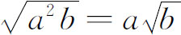
以及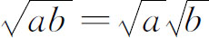
这样的变换式子成为常见的东西。在算术上阿拉伯人倒退了一步。他们虽然通过印度人的著作熟悉负数以及负数的运算，但他们摒弃了负数。
在代数方面阿拉伯人的第一个贡献是提供了这门学科的名称。西文“algebra”（代数）这个字来源于830年天文学者阿尔花拉子米（Mohammed ibn Musa al-Khowârizmî，约825年）所著的一本书
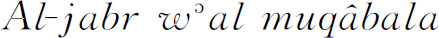
。al-jabr的原意是“复原”，根据那里上下文的意思是说在方程的一边去掉一项就必须在另一边加上这一项使之恢复平衡；例如若从x2-7＝3把-7去掉，就必须写x2＝7＋3才能恢复平衡。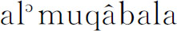
意即“化简”，例如把3x与4x并成7x，或从方程两边消掉相同的项。al-jabr这个字以后又有“接骨者”的意思，也就是指恢复骨折或脱臼的人。当摩尔人把这字传到西班牙去时，它就变成algebrista，意思仍是“接骨者”。在西班牙曾一度常可在理发铺门口见到这样的招牌“Algebrista y Sangrador”（接骨兼放血医师），因在当时乃至在几个世纪以后理发师是兼做这些比较简单的医疗工作的。在16世纪的意大利，algebra还是指接骨术。当阿尔花拉子米的书在12世纪译成拉丁文时，书名译为Ludus algebrae et almucgrabalaeque，但也用过其他名称。这门学科以后简称为algebra（汉译名为“代数”——译者）。阿尔花拉子米的代数是根据婆罗摩笈多的著作写的，但也受了巴比伦人和希腊人的影响。阿尔花拉子米做的有些运算和丢番图做的完全一样。例如，碰到含有几个未知量的若干个方程时，就把它化到只含一个未知量然后求解。在方程中出现未知量ς同时出现ς2时丢番图把他的ς称作边；阿尔花拉子米也是这样做的。阿尔花拉子米把未知量的平方称为“乘幂”（power），这也是丢番图的用语。他也像丢番图那样给未知量的乘幂起特别的名称。他称未知量为“东西”或（植物的）“根”，从而把解未知量叫求根。在11世纪初写过一本高超的阿拉伯代数书的巴格达的阿尔卡克西（al-Karkhî，死于1029年）肯定是模仿希腊人特别是模仿丢番图的。然而阿拉伯人没有采用成套的符号。他们的代数完全是用文字叙述的，从这方面讲比起印度人甚至比起丢番图来他们是后退了一步。
阿尔花拉子米在他的代数书里给出了（x±a）与（y±b）的乘积。他指出怎样从ax2＋bx＋c这种形式的式子里减去或加上一些项。他解出了一次和二次方程，但保留六种不同的形式如ax2＝bx，ax2＝c，ax2＋c＝bx，ax2＋bx＝c以及ax2＝bx＋c，而让a，b，c总是正数。这就避免了单独出现负数以及减数可能大于被减数的情形。在把二次方程分成不同形式这一点上，阿尔花拉子米也是照着丢番图那样做的。阿尔花拉子米认识到二次方程有两个根，但他只给出正的实根，并且可以是无理根。有些作者则既给出正根又给出负根。
阿尔花拉子米所论述的二次方程可举一例如下：“根的平方和十个根等于39个dirhem（阿拉伯重量单位或钱币。——译者），就是说，你把十个根和一个根的平方相加，其和等于39。”他给出的解法是这样的：“取根数目的一半，在这里就是5，然后让它自乘得结果为25。把这同39相加得64；开平方得8，再减掉根数的一半，就是说减掉5，余3。这就是根。”解法正好就是配方所该做的步骤。
阿拉伯人虽然给出二次方程的代数解法，但他们是从几何上来解释或确认他们的算法步骤的。他们无疑是受了希腊人依赖于几何代数法的影响；他们虽把解题步骤算术化了，但一定仍相信证明必得用几何方法。因此，在解x2＋10x＝39这个方程时，阿尔花拉子米给出了如下的几何方法。设AB（图9.1）表示未知量x的值。作正方形ABCD。延长DA到H，延长DC到F，使AH＝CF＝5，这是x系数的一半。分别作以DH及DF为边的正方形。于是I，II及III三块面积各为x2，5x及5x。这三者之和就是方程的左边。现在把两边加上面积IV即25。因此整个正方形是39＋25或64，它的边必是8。于是AB或AD等于8-5或3。这就是x的值。这几何论证是依据《原本》第二篇命题4而来的。
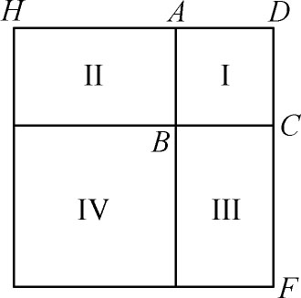
图9.1
阿拉伯人也用代数方法解出一些三次方程，然后照上面对二次方程那样作出几何解释。例如，巴格达的异教徒塔比特·伊本·科拉（Tâbit ibn Qorra，836—901）就是这样做的（此人又是医生、哲学家和天文学家），还有埃及人al-Hasan ibn al-Haitham——通常以阿尔哈森（Alhazen，约965—1039）知名于世——也是这样做的。至于一般三次方程，则海亚姆认为只有从几何上用圆锥曲线才能解。我们来考察他所解的一个比较简单的情形x3＋Bx＝C（B与C都是正数）以说明他在他的《代数》（Algebra）（约1079）中所用的方法。
海亚姆把这方程写成x3＋b2x＝b2c，这里b2＝B，b2c＝C。然后他作一个正焦弦为b的抛物线（图9.2）。这个值确能定出一个抛物线，并且虽然曲线本身不能用尺规作出，但曲线上的点需要多少就可以作出多少个来。然后他在长度为c的直径QR上作半圆。于是抛物线与半圆的交点P就定出垂线PS，而QS便是三次方程的解。
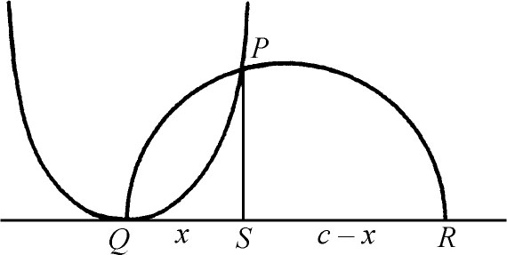
图9.2
海亚姆的证明是纯综合性的。根据阿波罗尼斯所给出的抛物线的几何性质（或者从方程x2＝by可以看出）
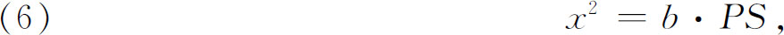
或
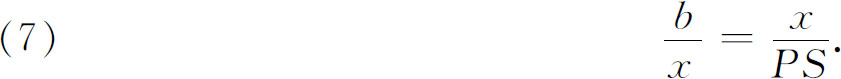
现在来看直角三角形QPR。高PS是QS与SR的比例中项。因此
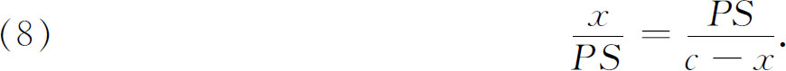
从（7）和（8）得
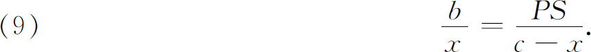
但由（7），
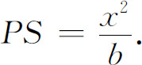
若把这PS值代入（9），则知x满足方程x3＋b2x＝b2c。
海亚姆又解出x3＋ax2＝c3这种类型的方程，它的根是用一双曲线和一抛物线的交点定出的；还解出了x3±ax2＋b2x＝b2c这一类型的方程，它的根是用一椭圆和一双曲线的交点定出的。他还解出一个四次方程（100-x2）（10-x）2＝8100，它的根是用一双曲线和一圆的交点定出的。他只给出了正根。
用圆锥曲线相交来解三次方程是阿拉伯人在代数上推进的一大步。其数学原理恰同希腊人的代数几何法一样，不过这里用的是圆锥曲线。所要的本应是个算术答案，但阿拉伯人只能通过度量最后代表x的那个长度才能得出解。在这项工作中，希腊几何的影响是很明显的。
阿拉伯人也解出了二次和三次的不定方程。有几个作家陈述了并打算证明x3＋y3＝z3没有正整数解。他们也给出了头n个自然数的一次、二次、三次和四次幂之和。